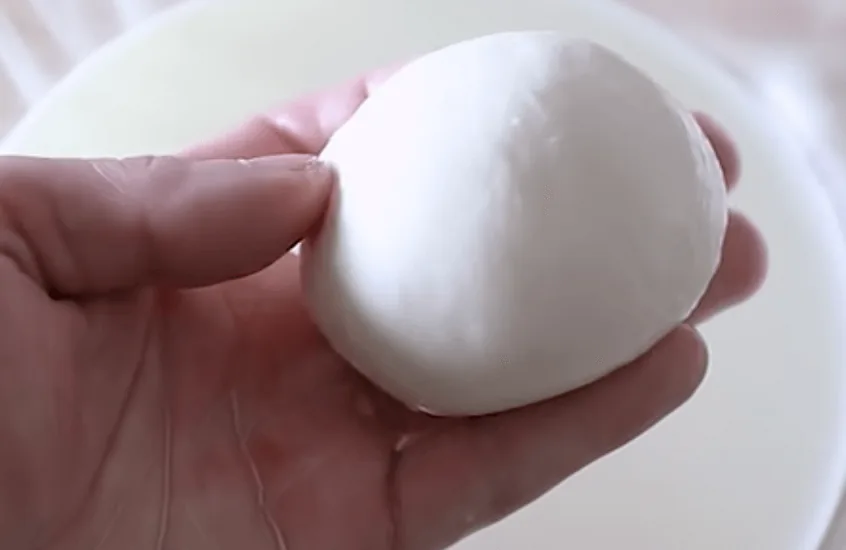

Mozzarella Cheese
Creamy white or pale ivory in colour, mozzarella has a mild, fresh lactic flavour.
INGREDIENTS
Tap items to check offINSTRUCTIONS
Tap a step to mark complete1. Stir to dissolve 1.5 teaspoons citric acid with 1 cup of water
2. Make sure completely dissolved
3. Stir to 1/2 teaspoon of liquid rennet with 1/4 cup water
4. Pour 1 gallon of milk in a cold pot
5. Slowly pour citric acid mixture into 1 gallon of milk while CONTINUOUSLY stirring
6. Heat milk to medium low heat
7. Stir occasionally to not form crust on top
8. Reach 90 Degrees F or 32 Degree C
9. Immediately remove milk from heat and slowly pour rennet mixture while vigorously stirring
10. As soon as rennet hits milk start counting to 25 and continue stirring till 25 seconds are done
11. Add a lid and let sit for 5 min
12. Should have a separation from curd and whey
13. If no separation let it sit for another 5 minutes

14. Begin cutting curd with knife all the way down and all the way across

15. After cutting put back on medium low heat and stir occasionally VERY slowly to not break up curds
16. Heat until 105 Degree F or 40 Degree C
17. Remove from heat for 5 minutes
18. Take the curd out of the whey with a spatula, spoon etc. and place in a strainer to let it
Let it strain for about 15 seconds
19. After 15 seconds squeeze the excess whey out, not too hard just to get some of it out
20. Go back to the water mixture in the pot (whey) and season it with 1tbs Kosher salt
21. Pour a small pot of the whey into another pot and heat it up to 180°F (82°C)
22. Place the warm whey on the curd for 15-20 seconds
23. Wear dish gloves and start to fold over itself

24. Once folded begin to form the curd into balls for eating

25. Place in container with room temperature whey and store in fridge till ready to serve
26. Once its settled in the whey you can wrap each ball individually and store for 3-4 days max
27. Serve with olive oil on top and salt for taste